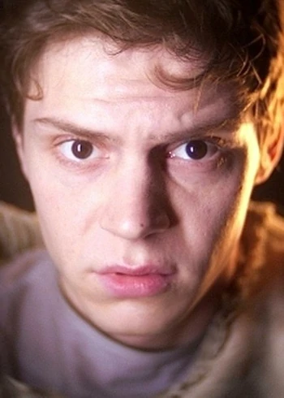
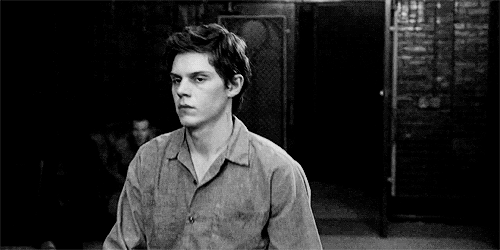

Кит завершает свой рабочий день на заправке, и тут его пугает Билли со своей шайкой. Он просит взять пистолет босса Кита, но тот отказывает. Затем Билли намекает на расу его девушки, и уезжает. Кит приезжает домой, где занимается сексом с Альмой. Когда она уходит, за окном начинает сиять яркий свет, который Кит принимает за хулиганство Билли. Дом начинается трястись, и Кит безуспешно пытается найти Альму. Неожиданно какая-то сила притягивает его к потолку. Он приходит в себя перед внеземным существом.Кита обвиняют в убийстве и сдирании кожи с Альмы и еще двух женщин, и сдают в Брайлкрифф. Его считают серийным убийцей Кровавым Ликом. После прибытия сестра Джуд обещает Киту, что он покается во своих грехах, но Кит отрицает свою вину, утверждая, что это были пришельцы. Джуд спрашивает сдиралась ли кожа Альмы легче, чем у остальных, за что Кит плюет ей в лицо. Она высекла его за это.
Кита отводят в общую комнату. Песня в патефоне действует ему на нервы, и он хочет отключить ее, но Грейс останавливает его и предупреждает, что это запрещено. Кит ввязывается в драку со Спиви, когда тот упомянул Альму. Пришедшие санитары разнимают их, и Джуд приказывает запереть Кита в карцере. Грейс приносит ему еды, и во время разговора они оба отрицают свою виновность. Позже Кита в свой кабинет забирает доктор Арден, чтобы исследовать его. В его шее он находит роботизированный жучок внеземного происхождения.Государство присылает в лечебницу психотерапевта Оливера Тредсона, чтобы тот разобрался в его психическом состоянии Кита. Во время сеанса Кит вновь рассказывает о зеленых человечках, и доктор решает, что у него психоз. Вечером в лечебнице падает напряжение, что Лана и Грейс используют для побега. Кит хочет присоединится к ним, но Лана отказывается показывать путь, так как не хочет, чтобы убийца оказался на свободе. Тогда Кит и Грейс решают бежать одни, но Лана предупреждает охранников, которые останавливают их. Утром Джуд решает выпороть нарушителей. Кит берет всю вину на себя, и наказывают только его.
В целом Кит добрый и милый парень, который старается избегать лишних конфликтов. Он упрямый и будет стоять на своем, даже если все остальные будут не согласны с ним. Кит производит впечатления любящего мужа, хотя далеко не идеален в этом плане. Он полигамен и быстро переключается с одной девушки на другую.